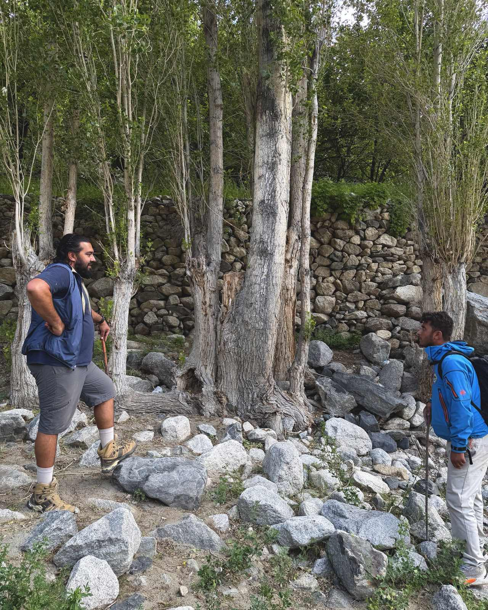

Find us in Skardu.
The fastest way to reach us is WhatsApp — message Hassnain to check bikes, routes, and dates. Prefer a call? Same number. You can also write to us, or follow the journey on Instagram.

Cycling Markhor, Skardu, Gilgit-Baltistan, Pakistan